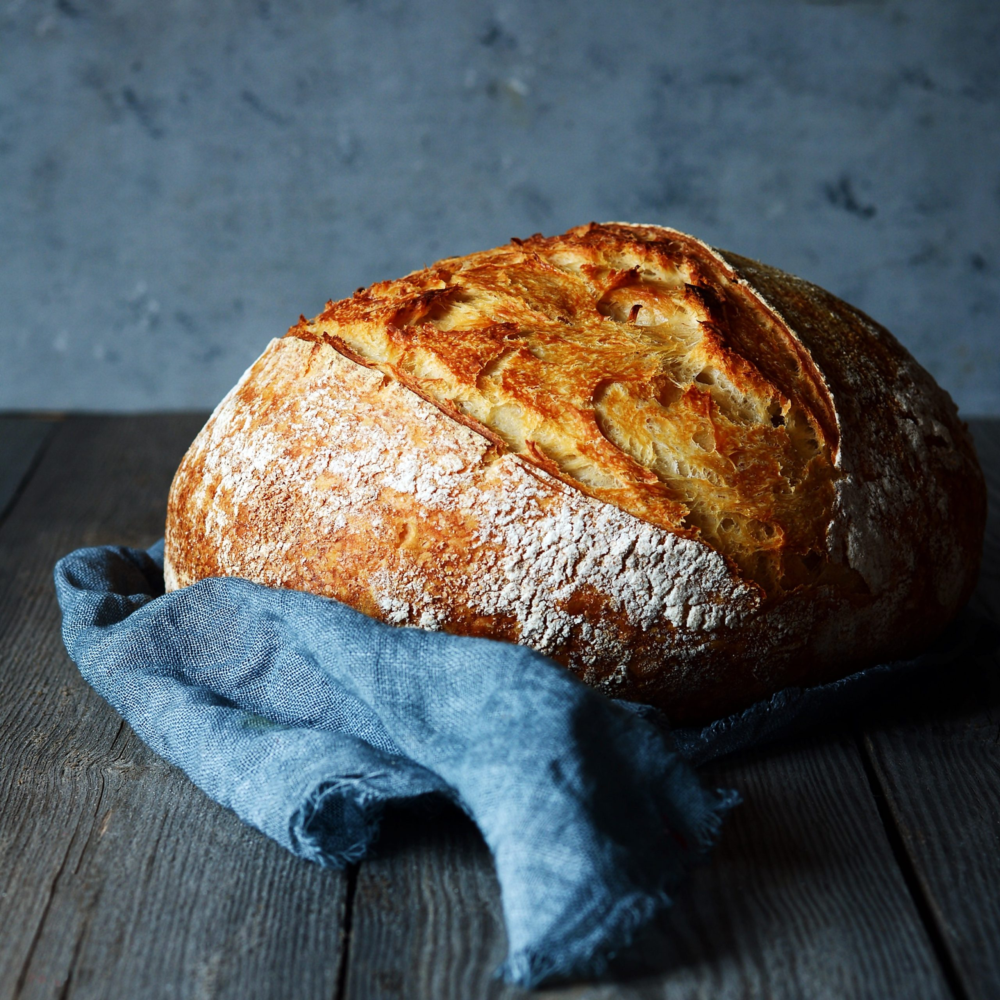

Artisan Sourdough Boule recipe
Home

Whats not to get excited about this fresh, chewy, gut healthy sourdough boule?
Sourdough Boule Ingredients:
- Active sourdough starter: The starter should have been fed 4-12 hours before starting the dough. Usually bubbling and doubled in size.
- Filtered or boiled water: Filtered is best. Alternatively, boiling for 15-20 mins diffuses the chlorine of tap water. Or leaving a jug at room temperature for 24 hours will have the same effect.
- Salt: Always try to opt for sea salt or himalayan salt. Iodized or table salt may alter the taste.
- Organic strong bread flour: Organic flours are always a better option if you have access.
Tools you may need:
- Large mixing bowl.
- Scoring tool
- Banneton or bowl lined with a tea towel.
- Dutch oven preferably.
- Large glass bowl
- Measuring equipment
- Bench scraper
Directions
- Add dry ingredients to a large bowl. Add in the sourdough starter and water. Mix until a shaggy dough forms. Cover and let the dough rest for 15-30 minutes.
- Grab the edge of the dough and pull up stretching it out as you pull upwards.
- Place dough that is in your hands back into the center. Turn the bowl about a quarter turn and complete another stretch and fold. Repeat the stretching and folding two more times. Cover.
- First 3 stretch and folds – every 15 minutes.Last 3 stretch and folds – every 30 minutes.
- Cover with damp cloth or cling film
Bulk fermentation
- Place dough in large, oiled bowl and cover with cling film or airtight lid.
- Allow to ferment for 8-12 hours. At least double in size. the longer the fermentation, the more acidity is created giving that signature sourdough flavour! so if you love that, then ferement longer.
Shaping the boule
- The next morning, take dough from the bowl, on a lightly floured surface. Shape into a round with oiled or floured hands. Pull each edge in to the middle until all have been folded to create tension. Leave to stand for 5 mins.
- Place the dough in a basket seam side up.
- Allow to rise for a second time until doubled, 2 to 4 hours.
- Preheat oven to 220degrees c.
- Score the boule into any design.
- put transfer to parchment paper and place in Dutch oven.
- Add a little sprayed water for that crunchy texture.
- Bake for 30 mins with the lid on, remove the lid and bake for a further 20 mins or until golden brown.
Allow to cool before serving and enjoy!